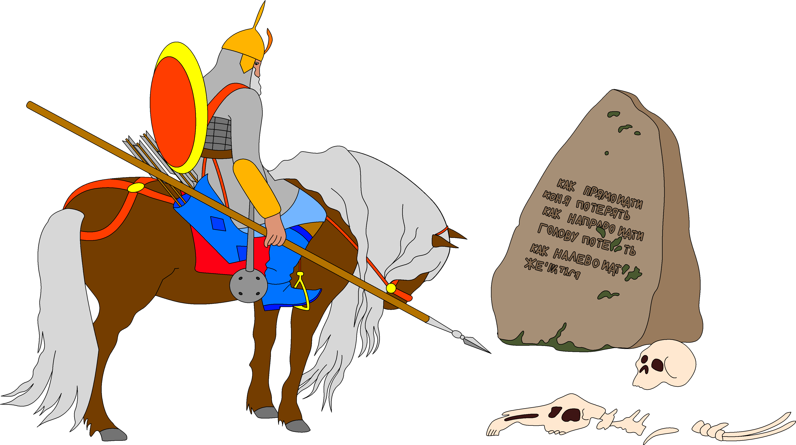
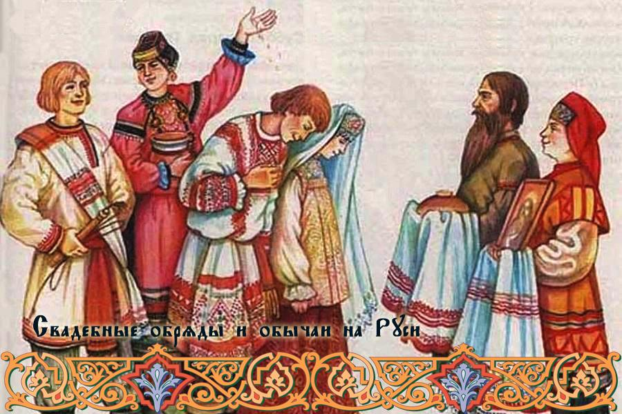
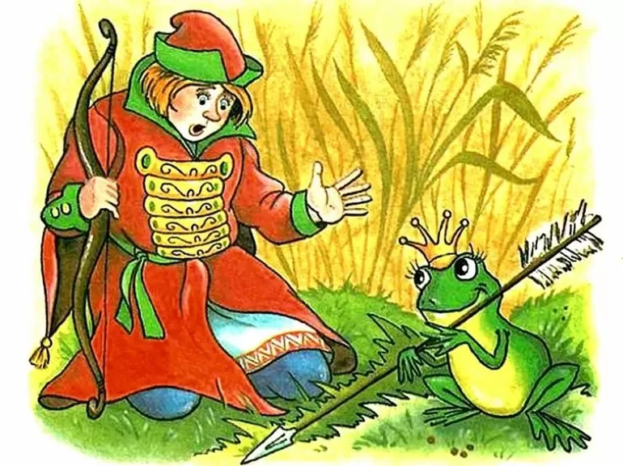
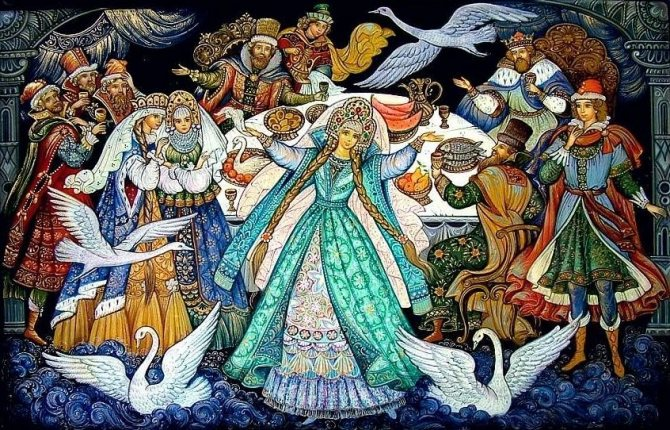
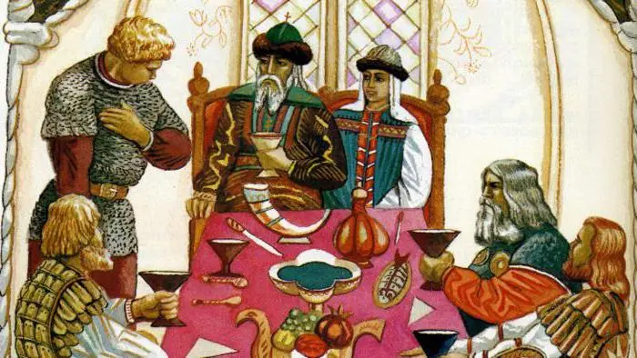

Куда пойдёшь, богатырь?

-
женатым быть
- 
- 
- 
- 
женатым быть
убитому быть
богатому быть
Только отъехал он три версты, увидал большой камень в триста пудов. А на том камне написано: «Кому камень под силу свернуть, тому богатому быть».
Принатужился Илья, уперся ногами, по колена в землю ушел, поддал могучим плечом - свернул с места камень.
Открылся под камнем глубокий погреб - богатства несметные: и серебро, и золото, и крупный жемчуг, и яхонты!
Нагрузил Илья Бурушку дорогой казной и повез ee в Киев-град. Там построил три церкви каменные, чтобы было где от врагов спасаться, от огня отсидеться. Остальное серебро-золото, жемчуг роздал он вдовам, сиротам, не оставил себе ни полушечки.
Потом сел на Бурушку, поехал к белому камню, стер надпись старую, надписал надпись новую: «Влево ездил - богат не бывал».
Как проехал Илья три версты, выехал на лесную поляну. Там стоят терема златоверхие, широко рас крыты ворота серебряные, на воротах петухи поют. Въехал Илья на широкий двор, выбежали к нему на встречу двенадцать девушек, среди них королевна-красавица.
- Добро пожаловать, русский богатырь, зайди в мой высокий терем, выпей сладкого вина, скушай хлеба-соли, жареной лебеди!
Взяла его королевична за руку, повела в терем, посадила за дубовый стол. Принесли Илье меду слад кого, вина заморского, жареных лебедушек, калачей крупитчатых... Напоила-накормила богатыря, стала его уговаривать:
- Ты устал с дороги, умаялся, ложись отдохни на кровать тесовую, на перину пуховую.
Повела королевична Илью в спальную горенку, а Илья идет и думает:
- Неспроста она со мной ласкова: что королевич- не простой казак, старый дедушка. Видно, что-то у нее задумано.
Видит Илья, что у стены стоит кровать точеная-золоченая, цветами расписана, догадался, что кровать с хитростью.
А если хочешь узнать, что дальше было - возьми книжку и прочитай её.
Только он отъехал три версты, напали на него сорок разбойников. Хотят его с коня стащить, хотят его ограбить, до смерти убить. А Илья головой качает, приговаривает:
- Эй вы, разбойнички, вам убить меня не за что и ограбить у меня нечего. Только и есть у меня кунья шубка в пятьсот рублей, соболиная шапка в три сотенки, да узда в пятьсот рублей, да седло черкасское в две тысячи. Ну, еще попона семи шелков, шита золотом да крупным жемчугом. Да меж ушами у Бурушки камень самоцвет. Он в осенние ночи как солнце горит, за три версты от него светло. Да еще, пожалуй, есть конь Бурушка - так ему во всем мире цены нет. Из-за этакой малости стоит ли старому голову рубить?!
Рассердился атаман разбойников:
- Это он над нами насмехается! Ах ты, старый черт, седой волк! Очень много ты разговариваешь! Гей, ребятушки, рубите ему голову!
Соскочил Илья с Бурушки-Косматушки, хватил шапку с седой головы да и стал шапкой помахивать: где махнет - там станет улица, отмахнется - переулочек.
За один взмах десять разбойников лежат, за второй - и двадцати на свете нет!
Взмолился атаман разбойников:
- Не побей нас всех, старый богатырь! Ты бери с нас золота, серебра, платье цветное, табуны коней, только нас живыми оставь!
Усмехнулся Илья Муромец:
- Кабы брал я со всех золотую казну, у меня были бы погреба полные. Кабы брал я цветное платье, за мной были бы горы высокие. Кабы брал я добрых коней, за мной гнали бы табуны великие.
А если хочешь узнать, что дальше было - возьми книжку и прочитай её.